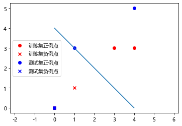
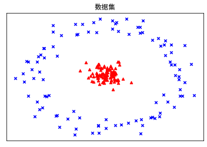
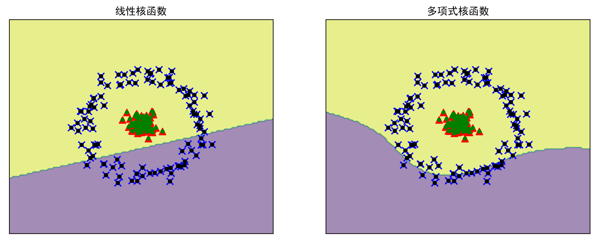
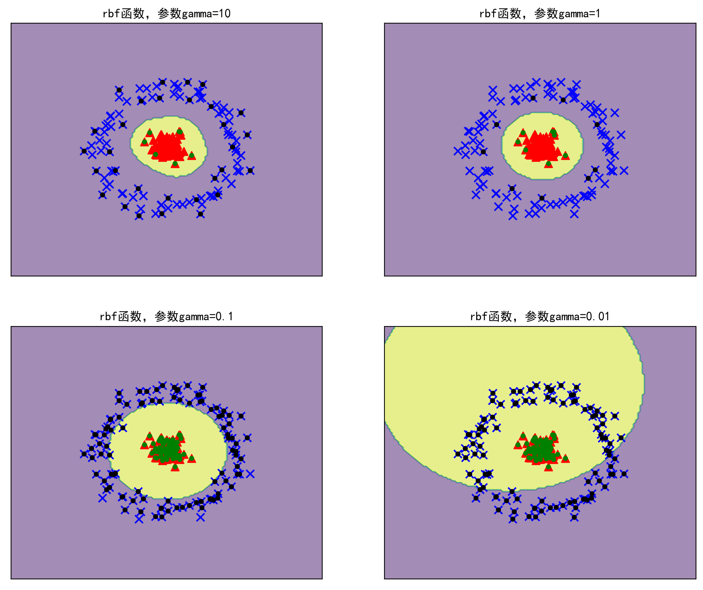
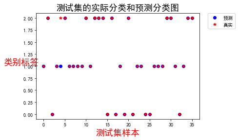
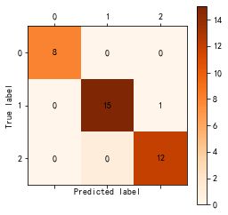
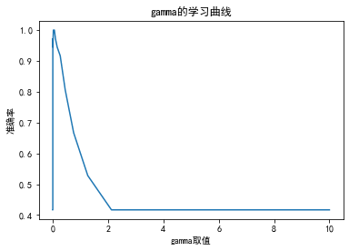
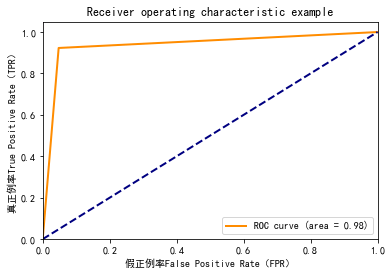
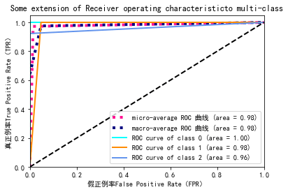
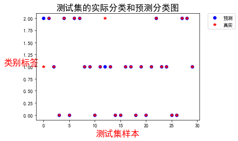

正文
10 数据的空间变换——核函数变换
10.1 相关知识简介
10.1.1 超平面
超平面（Hyper Plane）的本质是自由度比所在空间的维度小 1，也就是（n-1）维度
n 维空间F n F^n F n a 1 x 1 + . . . + a n x n = b a _ 1 x _ 1 + ... + a _ n x _n =b a 1 x 1 + . . . + a n x n = b a 1 , . . . , a n ∈ F a _ 1,...,a _ n \in F a 1 , . . . , a n ∈ F
也可表示为w ⋅ x + b = 0 \mathbf{w\cdot x}+b=0 w ⋅ x + b = 0 w \mathbf{w} w x \mathbf{x} x w = [ w 1 , w 2 , . . . , w n ] T , x = [ x 1 , x 2 , . . . , x n ] T \mathbf{w}=[w _ 1,w _ 2,...,w _ n]^T,\mathbf{x}=[x _ 1,x _ 2,...,x _ n]^T w = [ w 1 , w 2 , . . . , w n ] T , x = [ x 1 , x 2 , . . . , x n ] T
w \mathbf{w} w
x \mathbf{x} x
b b b
w ⋅ x \mathbf{w\cdot x} w ⋅ x w \mathbf{w} w x \mathbf{x} x
向量的内积可以转换为矩阵的乘积, 所以w ⋅ x = w T x , w T \mathbf{w\cdot x}=\mathbf{w}^T\mathbf{x}, \mathbf{w}^T w ⋅ x = w T x , w T w \mathbf{w} w
超平面将空间划分为 3 部分, 即超平面本身w ⋅ x + b = 0 \mathbf{w\cdot x}+b=0 w ⋅ x + b = 0 w ⋅ x + b > 0 \mathbf{w\cdot x}+b>0 w ⋅ x + b > 0 w ⋅ x + b < 0 \mathbf{w\cdot x}+b<0 w ⋅ x + b < 0
10.1.2 线性分类
若一个分类超平面可以将两类样本完全分开, 则称这些样本是"线性可分"的, 椭圆在二维空间内不是分类超平面(不是一维), 不是线性可分的
10.1.3 升维
把样本从原输入低维空间向高维特征空间作映射,使得数据的维度增大
非线性可分问题可以通过升维, 找到合适的映射函数将低维的向量x \mathbf{x} x x ′ \mathbf{x}' x ′ x ′ \mathbf{x'} x ′ w \mathbf{w} w
10.2 核函数的引入
10.3.1 核函数定义
设χ \chi χ χ \chi χ f ( x ) : χ → H f(\mathbf{x}):\chi \to H f ( x ) : χ → H x , y ∈ χ \mathbf{x},\mathbf{y}\in \chi x , y ∈ χ K ( x , y ) = f ( x ) ⋅ f ( y ) K(\mathbf{x},\mathbf{y})=f(\mathbf{x})\cdot f(\mathbf{y}) K ( x , y ) = f ( x ) ⋅ f ( y ) K ( x , y ) K(\mathbf{x}, \mathbf{y}) K ( x , y )
任何半正定(≥ 0 \ge 0 ≥ 0
10.3.3 核函数的特点
在原空间进行计算, 避免"维数灾难", 大大减小计算量, 有效处理高维输入
10.4 常用核函数
名称
说明
线性核函数
对数据不进行任何变换, 不需要设置任何参数, 速度快, 用于线性可分, 适用于维度很大、样本数量差不多的数据集, 也可手动升维, 再使用线性核函数
多项式核函数
偏线性, 非常适合用于图像处理, 可调节参数获得好的结果
高斯径向基核函数
偏非线性, 适用范围较广, 是 SVM 的默认核函数, 适用于维度较低和样本数量一般的数据集
10.4.1 线性核函数
K ( x , y ) = x ⋅ y K(\mathbf{x},\mathbf{y})=\mathbf{x}\cdot \mathbf{y}
K ( x , y ) = x ⋅ y
线性核函数是最简单的核函数, 此时的映射函数为f ( z ) = z f(\mathbf{z})=z f ( z ) = z
10.4.2 多项式核函数
K ( x , y ) = [ γ ( x ⋅ y ) + c ] d K(\mathbf{x},\mathbf{y})=\left [ \gamma (\mathbf{x}\cdot \mathbf{y})+c \right ]^d
K ( x , y ) = [ γ ( x ⋅ y ) + c ] d
γ > 0 \gamma > 0 γ > 0 ( x ⋅ y ) (\mathbf{x}\cdot \mathbf{y}) ( x ⋅ y )
c 代表常数项, c>0 时称为非齐次多项式
d 代表项式的阶次, 一般设 d=2, 若 d 取值过高, 学习的复杂性也会过高, 容易出现过拟合的现象.
多项式核函数对应的映射后的特征维度为C n + d d C ^d _ {n+d} C n + d d x \mathbf{x} x
常用的多项式核函数
K ( x , y ) = [ γ ( x ⋅ y ) + 1 ] 2 K(\mathbf{x},\mathbf{y})=\left [ \gamma (\mathbf{x}\cdot \mathbf{y})+1 \right ]^2 K ( x , y ) = [ γ ( x ⋅ y ) + 1 ] 2
K ( x , y ) = [ ( x ⋅ y ) + 1 ] 2 = ( Σ i = 1 n x i y i + 1 ) 2 K(\mathbf{x},\mathbf{y})=\left [ (\mathbf{x}\cdot \mathbf{y})+1\right ]^2=(\Sigma^n _ {i=1}\mathbf{x} _ i \mathbf{y} _ i + 1)^2 K ( x , y ) = [ ( x ⋅ y ) + 1 ] 2 = ( Σ i = 1 n x i y i + 1 ) 2
= Σ i = 1 n x i 2 y i 2 + Σ i = 2 n Σ j = 1 i − 1 ( 2 x i x j ) ( 2 y i y j ) + Σ i = 1 n ( 2 x i ) ( 2 y i ) + 1 ={\color{Red}{\Sigma^n _ {i=1} \mathbf{x}^2 _ i \mathbf{y}^2 _ i}} + {\color{Blue}{\Sigma^n _ {i=2}\Sigma^{i-1} _ {j=1}(\sqrt 2 \mathbf{x} _ i\mathbf{x} _ j)(\sqrt 2 \mathbf{y} _ i\mathbf{y} _ j)}}+ {\color{Green}{\Sigma^n _ {i=1}(\sqrt 2 \mathbf{x} _ i)(\sqrt 2 \mathbf{y} _ i)}} + {\color{Purple}1} = Σ i = 1 n x i 2 y i 2 + Σ i = 2 n Σ j = 1 i − 1 ( √ 2 x i x j ) ( √ 2 y i y j ) + Σ i = 1 n ( √ 2 x i ) ( √ 2 y i ) + 1
所以f ( z ) = [ z n 2 , z n − 1 2 , . . . , z 1 2 , 2 z n z n − 1 , . . . , 2 z 2 z 1 , 2 z n , 2 z n − 1 , 1 ] f(\mathbf{z})=\left[{\color{Red}{z^2 _ n}}, {\color{Blue}{z^2 _ {n-1},...,z^2 _ 1, \sqrt 2 z _ n z _ {n-1},...,\sqrt 2 z _2 z _1, \sqrt 2z _n}}{\color{Green}{,\sqrt 2z _ {n-1}}}{\color{Purple}{,1}}\right] f ( z ) = [ z n 2 , z n − 1 2 , . . . , z 1 2 , √ 2 z n z n − 1 , . . . , √ 2 z 2 z 1 , √ 2 z n , √ 2 z n − 1 , 1 ]
使用该函数, 设向量X = [ 1 , 2 , 3 , 4 ] , Y = [ 5 , 6 , 7 , 8 ] \mathbf{X}=[1, 2, 3, 4], \mathbf{Y}=[5, 6, 7, 8] X = [ 1 , 2 , 3 , 4 ] , Y = [ 5 , 6 , 7 , 8 ] C 4 + 2 4 = 1 5 C ^4 _ {4+2}=15 C 4 + 2 4 = 1 5 K ( x , y ) = f ( x ) ⋅ f ( y ) K(\mathbf{x},\mathbf{y})=f(\mathbf{x})\cdot f(\mathbf{y}) K ( x , y ) = f ( x ) ⋅ f ( y )
1 2 3 4 5 6 7 8 9 10 11 12 13 14 15 16 17 18 19 20 21 22 23 24 25 26 27 28 29 30 31 32 import numpy as npdef f (Z ):""" 映射函数, 时间复杂度 O(n^2)? """ 2 1 ] - 1 for i in range (Z_shape, 0 , -1 ):for j in range (i - 1 , -1 , -1 ):0 , i] * Z[0 , j] * 2 ** 0.5 1 , -1 )2 ** 0.5 return np.hstack((Z1 ,Z2, Z3, [[1 ]]))1 ,2 ,3 ,4 ]]) 5 ,6 ,7 ,8 ]])1 ) ** 2 print ("使用多项式核函数计算的结果为：" , XY_poly)print ("使用映射计算的结果为：" , X1.dot(Y1.T))print ("输出 X 的映射值为：\n" ,X1)print ("输出 Y 的映射值为：\n" ,Y1)print ("原输入空间的维度为：" , np.shape(X)[1 ])print ("映射后特征空间的维度为：" , np.shape(X1)[1 ])
使用多项式核函数计算的结果为：[[5041]]
使用映射计算的结果为：[[5041.]]
输出 X 的映射值为：
[[ 1. 4. 9. 16. 16.97056275 11.3137085
5.65685425 8.48528137 4.24264069 2.82842712 1.41421356 2.82842712
4.24264069 5.65685425 1. ]]
输出 Y 的映射值为：
[[25. 36. 49. 64. 79.19595949 67.88225099
56.56854249 59.39696962 49.49747468 42.42640687 7.07106781 8.48528137
9.89949494 11.3137085 1. ]]
原输入空间的维度为：4
映射后特征空间的维度为：15
10.4.3 高斯径向基核函数
K ( x , y ) = e ( − ∥ x − y ∥ 2 2 σ 2 ) K(\mathbf{x},\mathbf{y})=e^{(-\frac{\left \|\mathbf{x}-\mathbf{y}\right \| ^2}{2\sigma^2})}
K ( x , y ) = e ( − 2 σ 2 ∥ x − y ∥ 2 )
此时映射函数映射之后是无穷维的
10.6 SVM 原理
SVM = Support Vector Machine 是支持向量
SVC = Support Vector Classification 就是支持向量机用于分类
SVR = Support Vector Regression.就是支持向量机用于回归分析
参考: python 机器学习 | SVM 算法介绍及实现
10.6.7 线性可分 SVM 的实现
给定训练数据集, 其正例点是x 1 = ( 4 , 3 ) , x 2 = ( 3 , 3 ) x _ 1 = (4, 3),x _ 2 = (3, 3) x 1 = ( 4 , 3 ) , x 2 = ( 3 , 3 ) x 3 = ( 1 , 1 ) x _ 3 = (1, 1) x 3 = ( 1 , 1 ) ( 4 , 5 ) (4, 5) ( 4 , 5 ) ( 0 , 0 ) (0, 0) ( 0 , 0 ) ( 1 , 3 ) (1, 3) ( 1 , 3 )
1 2 3 4 5 6 7 8 9 10 11 12 13 14 15 16 17 18 19 20 21 22 23 24 25 26 27 28 29 30 31 32 33 34 35 36 37 38 39 40 41 42 43 44 45 46 47 48 49 import numpy as npfrom sklearn.svm import SVC import matplotlib.pyplot as pltimport matplotlib as mpl4 , 3 ], [3 , 3 ], [1 , 1 ]])1 , 1 , -1 ]) print ("训练集(最右一列为标签):\n" , np.hstack((x, y.reshape(3 , 1 ))))"linear" ) 4 , 5 ], [0 , 0 ], [1 , 3 ]])print ("预测数据[4, 5], [0, 0], [1, 3]的类型值分别是" , test_y)0 ] 0 ] / w[1 ] print ("支持向量：\n" ,model.support_vectors_) print ("支持向量的标号：" ,model.support_) print ("每类支持向量的个数：" ,model.n_support_) print ("数据集 X 到分类超平面的距离：" ,model.decision_function(x))print ("参数（法向量）w =" , w)print ("分类线的斜率 a =" , a)print ("分类平面截距 b：" , b) print ("系数" ,model.coef_) print ("超平面方程为{}x + {}y {} = 0" .format (w[0 ], w[1 ], b[0 ]))"font.sans-serif" ] = ["Microsoft YaHei" ]'axes.unicode_minus' ] = False "equal" )for i in range (0 , len (train_x)):0 ], train_x[i][1 ], color="red" , marker=["x" , "o" ][int (train_y[i] * 0.5 + 0.5 )])for i in range (0 , len (test_x)):0 ], test_x[i][1 ], color="blue" , marker=["x" , "o" ][int (test_y[i] * 0.5 + 0.5 )])0 , 4 , 2 ), a * np.linspace(0 , 4 , 2 ) - b / w[1 ])0 , 0 , color="red" ) 0 , 0 , color='red' )0 , 0 , color="red" , marker="o" ), plt.scatter(0 , 0 , color="red" , marker="x" ),0 , 0 , color="blue" , marker="o" ), plt.scatter(0 , 0 , color="blue" , marker="x" )],'训练集正例点' , '训练集负例点' , '测试集正例点' , '测试集负例点' ] , loc='best' )
训练集(最右一列为标签):
[[ 4 3 1]
[ 3 3 1]
[ 1 1 -1]]
预测数据[4, 5], [0, 0], [1, 3]的类型值分别是 [ 1 -1 1]
支持向量：
[[1. 1.]
[3. 3.]]
支持向量的标号：[2 1]
每类支持向量的个数：[1 1]
数据集 X 到分类超平面的距离：[ 1.5 1. -1. ]
参数（法向量）w = [0.5 0.5]
分类线的斜率 a = -1.0
分类平面截距 b：[-2.]
系数 [[0.5 0.5]]
超平面方程为 0.5x + 0.5y -2.0 = 0

10.7 非线性 SVM 与核函数的引入
参考: 核函数与非线性支持向量机(SVM)
10.7.2 非线性 SVM 的实现
(1) 调用相关的库
1 2 3 4 5 6 7 8 import numpy as npfrom sklearn.svm import SVCimport matplotlib.pyplot as pltfrom sklearn.datasets import make_circles import matplotlib as mpl'font.sans-serif' ] = ['SimHei' ]
(2) 通过函数 plot_decision_boundary()实现散点图和支持向量的绘图
1 2 3 4 5 6 7 8 9 10 11 12 13 14 15 16 17 18 19 20 21 22 23 24 25 26 27 28 29 30 31 32 33 34 35 36 37 38 39 40 41 42 43 44 45 def plot_decision_boundary (model, X, y, h=0.03 , draw_SV=True , title='decision_boundary' ):""" 画分类数据集 :param model: :param X: :param y: :param h: 步长 :param draw_SV: :param title: 标题 """ 0 ].min () - 1 , X[:,0 ].max () + 1 1 ].min () - 1 , X[:, 1 ].max () + 1 """ 语法：X,Y = numpy.meshgrid(x, y) 输入的 x，y，就是网格点的横纵坐标列向量（非矩阵） 输出的 X，Y，就是坐标矩阵。 """ 1 )) min (), xx.max ())min (), yy.max ())0.5 ) 'x' , '^' , 'o' ]'b' , 'r' , 'c' ] for label in classes:0 ], X[y == label][:, 1 ], 60 , marker=markers[label])if draw_SV:0 ] 0 ],SV[:n, 1 ], s=15 , c='black' , marker='o' )0 ],SV[n:, 1 ], s=15 , c='g' , marker='o' )
(3) 生成模拟分类数据集，并画出数据集
1 2 3 4 5 6 7 8 9 10 11 12 13 14 15 16 17 18 19 20 """ make_circles: n_samples：int，optional（默认值= 100） 生成的总点数。如果是奇数，则内圆将比外圆具有一个点。 shuffle：bool，optional（默认值= True） 是否洗牌样品。 noise：双倍或无（默认=无） 高斯噪声的标准偏差加到数据上。 random_state：int，RandomState 实例或 None（默认） 确定数据集重排和噪声的随机数生成。传递一个 int，用于跨多个函数调用的可重现输出。见术语表。 factor：0 < double < 1（默认值= .8） 内圈和外圈之间的比例因子。 """ 200 ,factor=0.1 ,noise=0.1 ) 0 , 0 ], X[y == 0 , 1 ], c='b' , s=20 , marker = 'x' ) 1 , 0 ], X[y == 1 , 1 ], c='r' , s=20 , marker = '^' ) '数据集' )

(4) 通过调用 SVM 函数, 分别构造线性核函数和三阶多项式核函数 SVM, 把运算的结果用图形描绘出来
1 2 3 4 5 6 7 8 9 10 11 12 13 14 15 16 17 18 plt.figure(figsize=(12 , 10 ), dpi=200 )1.0 , kernel='linear' ) 2 , 2 , 1 )'线性核函数' ) print ("采用线性核函数生成的支持向量个数：" , model_linear.n_support_)1.0 , kernel='poly' , degree=3 , gamma="auto" ) 2 , 2 , 2 )'多项式核函数' ) print ("采用多项式函数生成的支持向量个数：" , model_poly.n_support_)
采用线性核函数生成的支持向量个数：[100 100]
采用多项式函数生成的支持向量个数：[100 100]

(5) 通过调用 SVC(), 分别构造 4 个高斯径向基核函数的 SVM, 对应的分别为 10, 1, 0.1, 0.01, 把运算的结果用图形描绘出来
1 2 3 4 5 6 7 8 9 10 11 12 plt.figure(figsize=(12 , 10 ), dpi=200 )for j, gamma in enumerate ((10 , 1 , 0.1 , 0.01 )):2 , 2 , j+1 )1.0 , kernel='rbf' , gamma=gamma)'rbf 函数，' '参数 gamma=' +str (gamma))print ("rbf 函数，参数 gamma=" ,str (gamma),"支持向量个数：" ,model_rtf.n_support_)
rbf 函数，参数 gamma= 10 支持向量个数：[30 7]
rbf 函数，参数 gamma= 1 支持向量个数：[9 8]
rbf 函数，参数 gamma= 0.1 支持向量个数：[96 96]
rbf 函数，参数 gamma= 0.01 支持向量个数：[100 100]

(6) 引申
1 2 3 4 5 6 7 8 9 10 11 12 13 14 from sklearn.model_selection import GridSearchCV'kernel' : ['rbf' ], 'gamma' : [1 , 0.1 , 0.01 ],'C' : [0.1 , 1 , 10 ]},'kernel' : ['linear' ], 'C' : [0.1 , 1 , 10 ]},'kernel' : ['poly' ],'gamma' : [1 , 0.1 , 0.01 ],'C' : [0.1 , 1 , 10 ]}]""" GridSearchCV()函数能实现自动调参, 把参数输进去, 就能给出最优的结果和参数 https://blog.csdn.net/weixin_41988628/article/details/83098130 """ 5 )print ("The best parameters are %s with a score of %0.2f"
The best parameters are {'C': 0.1, 'gamma': 1, 'kernel': 'rbf'} with a score of 1.00
10.8 综合实例——利用 SVM 构建分类问题
准备工作: 导入需要的模块
1 2 3 4 5 6 import numpy as npfrom sklearn import svmfrom sklearn.svm import SVC from sklearn.model_selection import train_test_split from sklearn.datasets import load_wine from time import time
(1)导入数据集
要将数据转换为 SVM 支持的数据格式: [ 1 类别标号 ] [ 特征 1 ] : [ 特征值 ] [ 特征 2 ] : [ 特征值 ]…
sklearn 自带经典的 wine 数据集, 通过 load_wine()函数导入
wine 数据集: https://scikit-learn.org/stable/modules/generated/sklearn.datasets.load_wine.html
属性
值
类
3
每类样品
[59,71,48]
样品总数
178
维度
13
1 2 3 4 wine = load_wine()
(array([[1.423e+01, 1.710e+00, 2.430e+00, ..., 1.040e+00, 3.920e+00,
1.065e+03],
[1.320e+01, 1.780e+00, 2.140e+00, ..., 1.050e+00, 3.400e+00,
1.050e+03],
[1.316e+01, 2.360e+00, 2.670e+00, ..., 1.030e+00, 3.170e+00,
1.185e+03],
...,
[1.327e+01, 4.280e+00, 2.260e+00, ..., 5.900e-01, 1.560e+00,
8.350e+02],
[1.317e+01, 2.590e+00, 2.370e+00, ..., 6.000e-01, 1.620e+00,
8.400e+02],
[1.413e+01, 4.100e+00, 2.740e+00, ..., 6.100e-01, 1.600e+00,
5.600e+02]]),
array([0, 0, 0, 0, 0, 0, 0, 0, 0, 0, 0, 0, 0, 0, 0, 0, 0, 0, 0, 0, 0, 0,
0, 0, 0, 0, 0, 0, 0, 0, 0, 0, 0, 0, 0, 0, 0, 0, 0, 0, 0, 0, 0, 0,
0, 0, 0, 0, 0, 0, 0, 0, 0, 0, 0, 0, 0, 0, 0, 1, 1, 1, 1, 1, 1, 1,
1, 1, 1, 1, 1, 1, 1, 1, 1, 1, 1, 1, 1, 1, 1, 1, 1, 1, 1, 1, 1, 1,
1, 1, 1, 1, 1, 1, 1, 1, 1, 1, 1, 1, 1, 1, 1, 1, 1, 1, 1, 1, 1, 1,
1, 1, 1, 1, 1, 1, 1, 1, 1, 1, 1, 1, 1, 1, 1, 1, 1, 1, 1, 1, 2, 2,
2, 2, 2, 2, 2, 2, 2, 2, 2, 2, 2, 2, 2, 2, 2, 2, 2, 2, 2, 2, 2, 2,
2, 2, 2, 2, 2, 2, 2, 2, 2, 2, 2, 2, 2, 2, 2, 2, 2, 2, 2, 2, 2, 2,
2, 2]))
(2) 数据预处理
使用数据预处理中标准化类 StandardScaler 对数据进行标准化, 以避免数据存在严重的量纲不一致的问题
数据的标准化(normalization)是将数据按比例缩放，使之落入一个小的特定区间。在某些比较和评价的指标处理中经常会用到，去除数据的单位限制，将其转化为无量纲的纯数值，便于不同单位或量级的指标能够进行比较和加权。
1 2 3 4 from sklearn.preprocessing import StandardScaler
array([[ 1.51861254, -0.5622498 , 0.23205254, ..., 0.36217728,
1.84791957, 1.01300893],
[ 0.24628963, -0.49941338, -0.82799632, ..., 0.40605066,
1.1134493 , 0.96524152],
[ 0.19687903, 0.02123125, 1.10933436, ..., 0.31830389,
0.78858745, 1.39514818],
...,
[ 0.33275817, 1.74474449, -0.38935541, ..., -1.61212515,
-1.48544548, 0.28057537],
[ 0.20923168, 0.22769377, 0.01273209, ..., -1.56825176,
-1.40069891, 0.29649784],
[ 1.39508604, 1.58316512, 1.36520822, ..., -1.52437837,
-1.42894777, -0.59516041]])
(3) 分离数据
将数据划分为训练集和测试集, 训练集: 测试集 = 80%: 20%
sklearn 的 train_test_split()各函数参数含义解释（非常全）
1 2 wine_train, wine_test, wine_train_label, wine_test_label = \0.2 , random_state=100 )
(4) 以默认的 SVM 参数, 对训练数据集进行训练, 产生训练模型(以默认的 rbf 为例)
1 2 3 4 time0 = time()
(5) 结果及分析
1 2 3 4 5 6 7 8 9 10 11 12 13 14 15 16 17 18 19 20 21 22 23 24 25 26 27 28 29 30 31 32 33 34 35 36 37 38 39 40 41 42 43 44 45 46 47 48 49 50 51 52 53 54 55 def result_show_analyse (test,test_label ):""" 预测结果并进行分析 """ from datetime import datetimeprint ("---------测试集的结果--------" )print ("测试集的真实结果为：\n" , test_label)print ("测试集的预测结果为：\n" , test_pred)sum (test_pred == test_label)print ("预测对的结果数目为：" , true)print ("预测错的结果数目为：" , test_label.shape[0 ] - true)print ("训练时间：" , datetime.fromtimestamp(time1-time0).strftime("%M:%S:%f" ))print ("---------测试集的结果分析--------" )print ("使用 SVM 预测 wine 数据的准确率是：%f" print ("使用 SVM 预测 wine 数据的精确率是：%f" "macro" )))print ("使用 SVM 预测 wine 数据的召回率是：%f" "macro" )))print ("使用 SVM 预测 wine 数据的 F1 值是：%f" "macro" )))print ("使用 SVM 预测 wine 数据的 Cohen’s Kappa 系数是：%f" print ("使用 SVM 预测 wine 数据的分类报告为：\n" ,print ("---------测试集的结果图--------" )'bo' , label="预测" )'r*' , label="真实" )r'测试集样本' ,color='r' , fontsize=18 )r'类别标签' ,color='r' , fontsize=18 , rotation=360 )1.05 , 1 ), loc=2 , borderaxespad=0. )'测试集的实际分类和预测分类图' , fontsize=18 )from sklearn.metrics import accuracy_score,precision_score, \from sklearn.metrics import classification_reportimport matplotlib.pyplot as pltfrom pylab import *'font.sans-serif' ] = ['SimHei' ]'axes.unicode_minus' ] = False
---------测试集的结果--------
测试集的真实结果为：
[1 2 0 1 2 2 1 1 1 1 2 1 2 2 2 0 2 0 1 0 2 0 1 1 0 0 1 1 1 2 2 1 0 1 2 2]
测试集的预测结果为：
[1 2 0 1 1 2 1 1 1 1 2 1 2 2 2 0 2 0 1 0 2 0 1 1 0 0 1 1 1 2 2 1 0 1 2 2]
预测对的结果数目为：35
预测错的结果数目为：1
训练时间：00:00:003162
---------测试集的结果分析--------
使用 SVM 预测 wine 数据的准确率是：0.972222
使用 SVM 预测 wine 数据的精确率是：0.979167
使用 SVM 预测 wine 数据的召回率是：0.974359
使用 SVM 预测 wine 数据的 F1 值是：0.975914
使用 SVM 预测 wine 数据的 Cohen’s Kappa 系数是：0.956938
使用 SVM 预测 wine 数据的分类报告为：
precision recall f1-score support
0 1.00 1.00 1.00 8
1 0.94 1.00 0.97 15
2 1.00 0.92 0.96 13
accuracy 0.97 36
macro avg 0.98 0.97 0.98 36
weighted avg 0.97 0.97 0.97 36
---------测试集的结果图--------

【Sklearn】sklearn.metrics 中的评估方法
通常以关注的类为正类，其他类为负类。分类器在测试数据集上预测要么正确要么不正确。4 种情况出现的总数分别记作：
名称
说明
tp（true positive）
将正类预测为正类
fn（false negative）
将正类预测为负类
fp（false positive）
将负类预测为正类
tn（true negative）
将负类预测为负类
分类 0 混淆矩阵:
预测属于分类 0
预测不属于分类 0
实际属于分类 0
tp = 8
fn = 0
实际不属于分类 0
fp = 0
tn = 28
precision
recall
f1-score
P = t p t p + f p = 1 P=\frac{tp}{tp+fp}=1 P = t p + f p t p = 1 R = t p t p + f n = 1 R=\frac{tp}{tp+fn}=1 R = t p + f n t p = 1 2 P R P + R = 1 \frac{2PR}{P+R}=1 P + R 2 P R = 1
分类 1 混淆矩阵:
预测属于分类 1
预测不属于分类 1
实际属于分类 1
tp = 15
fn = 0
实际不属于分类 1
fp = 1
tn = 20
precision
recall
f1-score
P = t p t p + f p = 1 5 1 6 = 0 . 9 3 7 5 P=\frac{tp}{tp+fp}=\frac{15}{16}=0.9375 P = t p + f p t p = 1 6 1 5 = 0 . 9 3 7 5 R = t p t p + f n = 1 R=\frac{tp}{tp+fn}=1 R = t p + f n t p = 1 2 P R P + R = 3 0 3 1 = 0 . 9 6 7 7 \frac{2PR}{P+R}=\frac{30}{31}=0.9677 P + R 2 P R = 3 1 3 0 = 0 . 9 6 7 7
分类 2 混淆矩阵:
预测属于分类 2
预测不属于分类 2
实际属于分类 2
tp = 12
fn = 1
实际不属于分类 2
fp = 0
tn = 23
precision
recall
f1-score
P = t p t p + f p = 1 P=\frac{tp}{tp+fp}=1 P = t p + f p t p = 1 R = t p t p + f n = 1 2 1 3 = 0 . 9 2 3 R=\frac{tp}{tp+fn}=\frac{12}{13}=0.923 R = t p + f n t p = 1 3 1 2 = 0 . 9 2 3 2 P R P + R = 2 4 2 5 = 0 . 9 6 \frac{2PR}{P+R}=\frac{24}{25}=0.96 P + R 2 P R = 2 5 2 4 = 0 . 9 6
(6) 分类结果的混淆矩阵及图表显示
1 2 3 4 5 6 7 8 9 10 11 12 13 14 15 16 17 18 19 20 21 from sklearn import metricsdef cm_plot (y,yp ):print ("测试集的混淆矩阵：\n" ,conf_mx)for x in range (len (conf_mx)):for y in range (len (conf_mx)):'center' ,'center' )'True label' )'Predicted label' )return plt
测试集的混淆矩阵：
[[ 8 0 0]
[ 0 15 0]
[ 0 1 12]]

10.9 高手点拨
10.9.1 SMO 算法
SVM 对应的优化算法, 以牺牲精度换取时间
Sequential Minimal Optimism
序列 最小 最优化 算法
10.9.3 核函数的选取
对于高斯径向基核函数, 可以通过求准确率, 画学习曲线来调整 gamma 值
1 2 3 4 5 6 7 8 9 10 11 12 13 14 15 10 , 1 , 50 ) for i in gamma_range:"rbf" ,gamma = i, cache_size=5000 )print ("最大的准确率为：" ,max (score))print ("对应的 gamma 值" , gamma_range[score.index(max (score))])"gamma 取值" )"准确率" )"gamma 的学习曲线" )
最大的准确率为：1.0
对应的 gamma 值 0.020235896477251554

10.9.4 多分类 ROC 曲线的绘制
【小学生都会的机器学习】一个视频帮各位总结好了混淆矩阵、召回率、精准率、ROC 等…
ROC 曲线绘制原理及如何用 SPSS 绘制 ROC 曲线
ROC 曲线越接近左上角, 代表模型性能越好
1 2 3 4 5 6 7 8 9 10 11 12 13 14 15 16 17 18 19 20 21 22 23 24 25 26 27 28 29 30 31 32 33 34 35 36 37 38 39 40 41 42 43 44 45 46 47 48 49 50 51 52 53 54 55 56 57 58 59 60 61 62 63 64 65 66 67 68 69 70 71 72 73 74 75 76 77 78 79 80 81 82 83 84 85 86 87 88 89 90 91 92 from itertools import cyclefrom sklearn.metrics import roc_curve, aucfrom sklearn.model_selection import train_test_splitfrom sklearn.preprocessing import label_binarizefrom numpy import interpdef plot_roc (test, test_label, test_pred ):""" :param test: 测试样本的数据 :param test_label: 测试样本的标签 :param test_pred: 测试样本的预测值 """ sum (unique(test_label)) for i in range (class_num)])for i in range (class_num)])dict () dict () dict () for i in range (class_num):"micro" ], tpr["micro" ], _ = roc_curve(Y_label.ravel(), Y_pred.ravel())"micro" ] = auc(fpr["micro" ], tpr["micro" ])for i in range (class_num)]))for i in range (class_num):"macro" ] = all_fpr"macro" ] = mean_tpr"macro" ] = auc(fpr["macro" ], tpr["macro" ])2 1 ], tpr[2 ], color="darkorange" ,"ROC curve (area = %0.2f)" % roc_auc[1 ])0 , 1 ], [0 , 1 ], color="navy" , lw=lw, linestyle="--" )0.0 , 1.0 ])0.0 , 1.05 ])"假正例率 False Positive Rate（FPR）" )"真正例率 True Positive Rate（TPR）" )"Receiver operating characteristic example" )"lower right" )2 "micro" ], tpr["micro" ],"micro-average ROC 曲线 (area = {0:0.2f})" "" .format (roc_auc["micro" ]),"deeppink" , linestyle=":" , linewidth=4 )"macro" ], tpr["macro" ],"macro-average ROC 曲线 (area = {0:0.2f})" "" .format (roc_auc["macro" ]),"navy" , linestyle=":" , linewidth=4 )"aqua" , "darkorange" , "cornflowerblue" ])for i, color in zip (range (class_num), colors):"ROC curve of class {0} (area = {1:0.2f})" "" .format (i, roc_auc[i]))0 , 1 ], [0 , 1 ], "k--" , lw=lw)0.0 , 1.0 ])0.0 , 1.05 ])"假正例率 False Positive Rate（FPR）" )"真正例率 True Positive Rate（TPR）" )'Some extension of Receiver operating characteristic' 'to multi-class' )"lower right" )


10.10 习题 构建基于 iris 数据集的 SVM 分类模型
https://scikit-learn.org/stable/modules/generated/sklearn.datasets.load_iris.html
1 2 3 4 5 6 7 8 9 10 11 12 13 14 15 16 17 18 19 20 21 22 23 24 25 26 27 28 29 30 31 32 33 34 35 36 import numpy as npfrom sklearn import svmfrom sklearn.svm import SVCfrom sklearn.model_selection import train_test_splitfrom sklearn.datasets import load_irisfrom sklearn.preprocessing import StandardScalerfrom sklearn.metrics import classification_reportimport matplotlib.pyplot as pltimport matplotlib as mplfrom time import time0.2 )print (classification_report(iris_test_label, iris_test_pred))'font.sans-serif' ] = ['SimHei' ]'axes.unicode_minus' ] = False print ("---------测试集的结果图--------" )'bo' , label="预测" )'r*' , label="真实" )r'测试集样本' ,color='r' , fontsize=18 )r'类别标签' ,color='r' , fontsize=18 , rotation=360 )1.05 , 1 ), loc=2 , borderaxespad=0. )'测试集的实际分类和预测分类图' , fontsize=18 )
precision recall f1-score support
0 1.00 1.00 1.00 9
1 0.92 0.92 0.92 13
2 0.88 0.88 0.88 8
accuracy 0.93 30
macro avg 0.93 0.93 0.93 30
weighted avg 0.93 0.93 0.93 30
---------测试集的结果图--------
